03-JavaScript基础一. 今日目标二. 今日内容(一) JavaScript1. 概念2. 功能3. 发展史(二) 基本语法1. 与html结合方式2. 注释3. 数据类型原始数据类型引用数据类型4. 变量定义变量typeof运算符5. 运算符算术运算符练习赋值运算符练习比较运算符练习逻辑运算符三元运算符示例6. 流程控制语句if...else...switchwhile循环do...while循环for循环JS特殊语法7. 练习：99乘法表(三) 基本对象1. Function：函数(方法)对象创建属性特点调用2. Array:数组对象(重要)创建属性方法示例特点3. Date：日期对象创建方法4. Math：数学对象创建：不需要创建,直接使用方法属性特点示例5. RegExp：正则表达式对象(重要)创建方法示例6. Global : 全局对象方法示例6. Boolean7. Number8. String9. Global三. 作业
x前端三要素:HTML : 从结构的角度描述页面的组成CSS : 从美观的角度描述页面的样式JavaScript : 从交互的角度描述页面的行为* JavaScript：运行在客户端浏览器中的脚本语言。每一个浏览器都有JavaScript的解析引擎* 脚本语言：不需要编译，直接就可以被浏览器解析执行了
xxxxxxxxxx* 可以来增强用户和html页面的交互过程，可以来控制html元素，让页面有一些动态的效果，增强用户的体验。
xxxxxxxxxx1. 1992年，Nombase公司，开发出第一门客户端脚本语言，专门用于表单的校验。命名为 ： C-- ，后来更名为：ScriptEase2. 1995年，Netscape(网景)公司，开发了一门客户端脚本语言：LiveScript。后来，请来SUN公司的专家，修改LiveScript，命名为JavaScript3. 1996年，微软抄袭JavaScript开发出JScript语言4. 1997年，ECMA(欧洲计算机制造商协会)，制定出客户端脚本语言的标准：ECMAScript，就是统一了所有客户端脚本语言的编码方式。* JavaScript = ECMAScript + JavaScript自己特有的东西(BOM+DOM)
组成
xxxxxxxxxx1. ECMAScript : 客户端脚本语言的标准2. BOM(Browser Object Model) : 浏览器对象模型3. DOM(Document Object Model) : 文档对象模型
xxxxxxxxxx1. 内部JS： 定义<script>，标签体内容就是js代码2. 外部JS： 定义<script>，通过src属性引入外部的js文件注意：1. <script>可以定义在html页面的任何地方。但是定义的位置会影响执行顺序。2. <script>可以定义多个
xxxxxxxxxx1. 单行注释：//注释内容2. 多行注释：/*注释内容*/
xxxxxxxxxx1. number：数字。 整数/小数/NaN(not a number 一个不是数字的数字类型)2. string：字符串。 字符串 "abc" "a" 'abc'3. boolean: true和false4. null：一个对象为空的占位符5. undefined：未定义。如果一个变量没有给初始化值，则会被默认赋值为undefined
xxxxxxxxxx什么是变量：一小块存储数据的内存空间Java语言是强类型语言，而JavaScript是弱类型语言。* 强类型：在开辟变量存储空间时，定义了空间将来存储的数据的数据类型。只能存储固定类型的数据* 弱类型：在开辟变量存储空间时，不定义空间将来的存储数据类型，可以存放任意类型的数据。
xxxxxxxxxxvar 变量名 = 初始化值;
xxxxxxxxxx获取变量的类型。
xxxxxxxxxxvar a ;alert(typeof (a)); //undefineda = 10.1 ;alert(typeof (a)); //numbera = "10.1";alert(typeof (a)); //stringa = "aaa";alert(typeof (a)); //stringa = true ;alert(typeof (a)); //booleana = null ;alert(typeof (a)); // object注：null运算后得到的是object
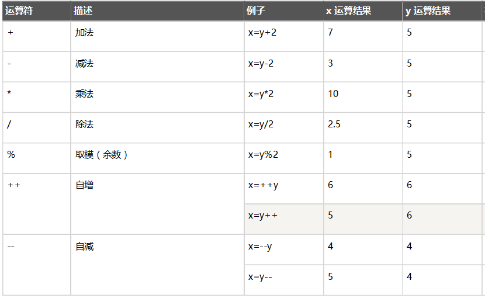
xxxxxxxxxx注意：1. 在JS中，如果运算数不是运算符所要求的类型，那么js引擎会自动的将运算数进行类型转换* string转number：按照字面值转换。如果字面值不是数字，则转为NaN（不是数字的数字）* boolean转number：true转为1，false转为02. 在JS中执行加发运算时,如果其中有一方是字符串,那么执行的是字符串的拼接
xxxxxxxxxx//1. 说出下面代码的执行结果var num1 = 10 ;alert(num1++); // 输出?alert(++num);// 输出?alert(num1);// 输出?var num2 = 10 ;alert(num1--); // 输出?alert(--num);// 输出?alert(num1);// 输出?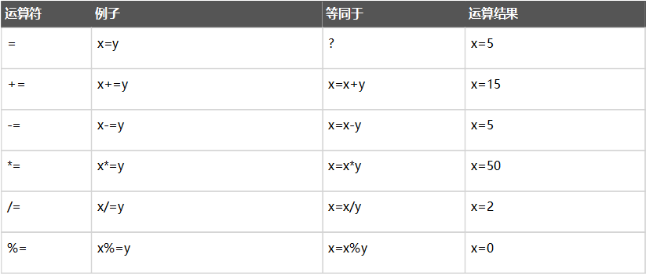
xxxxxxxxxx//1. 说出下面代码的执行结果var num1 = 10 ;num1+=10 ;alert(num1);// 输出?num1+="20";alert(num1);// 输出?var num2 = 20 ;num2-="10" ;alert(num2)// 输出?var a = 10 ;var b = 20 ;alert("a+b="+a+b);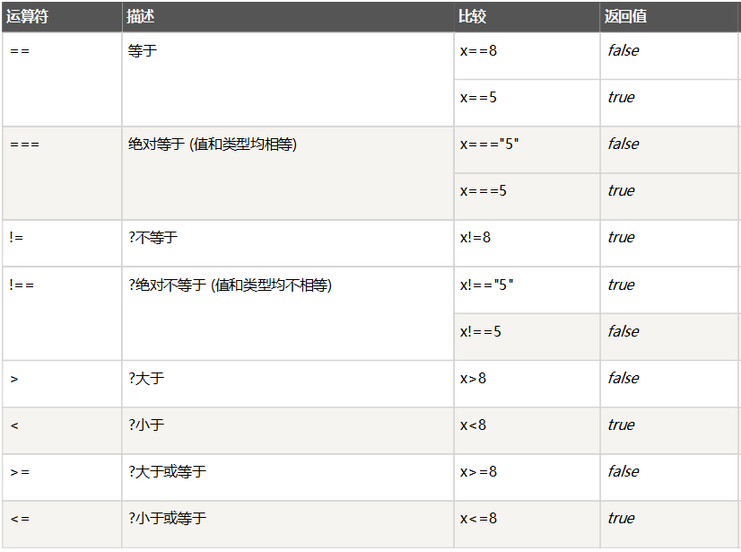
xxxxxxxxxx== 逻辑等。仅仅对比 值=== 全等。 对比值并且对比类型。如果值和类型都相同，则为true；值和类型有一个不同，则为falsexxxxxxxxxxvar x=8;alert(x==8);// 输出?alert(x===8);// 输出?alert(x=="8");// 输出?alert(x==="8");// 输出?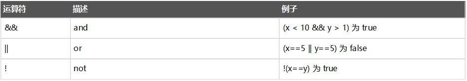
xxxxxxxxxxJS中执行逻辑运算符,如果运算的变量不是boolean类型,那么会自动转化为boolean类型进行运算1. number：0或NaN为假，其他为真2. string：除了空字符串("")，其他都是true3. null&undefined:都是false4. 对象：所有对象都为true语法: 表达式? 值1:值2
判断表达式的值，如果是true则取值1，如果是false则取值2
xxxxxxxxxx//如果变量 age 中的值小于 18，则向变量 voteable 赋值 "年龄太小"，否则赋值 "年龄已达到"。var age = 20 ;var result = (age<18)?"年龄太小":"年龄已达到";alert(result); //输出?xxxxxxxxxx// 判断大小if(age<18){ alert("未成年...");}else{ alert("已成年...")}xxxxxxxxxx//在java中，switch语句可以接受的数据类型： byte int shor char,枚举(1.5) ,String(1.7)//在JS中,switch语句可以接受任意的原始数据类型//根据分类id输出分类名称var category = 1 ; //分类idswitch (category){ case 1: alert("电脑办公...") ; break; case 2: alert("手机数码...") ; break; case 3: alert("丽人美妆...") ; break; default: alert("其他..")}xxxxxxxxxx//输出1-100中能被11100中能被11整出的数var i = 0 ;while( i <= 100 ){ if(i%11==0){ alert(i) } i++ ;}xxxxxxxxxxvar i = 0 ;do{ if(i%11==0){ alert(i) }; i++ ;}while( i <= 100 )xxxxxxxxxx//输出1-100中能被11100中能被11整出的数for (var i = 0 ;i<=100;i++) { if(i%11==0){ alert(i) };}xxxxxxxxxx1. 语句以`;`结尾，如果一行只有一条语句则 `;`可以省略 (不建议)2. 变量的定义使用var关键字，也可以不使用* 用： 定义的变量是局部变量* 不用：定义的变量是全局变量(不建议)
xxxxxxxxxxfunction func(){ var a = 10 ;}func();alert("a1"+a); //方法外不能使用function func2(){ a = 10 ;}func2();alert("a2"+a); //方法外可以使用xxxxxxxxxx<html lang="en"><head><meta charset="UTF-8"><title>99乘法表</title><style> td{ border: 1px solid; }</style><script> document.write("<table align='center'>"); //1.完成基本的for循环嵌套，展示乘法表 for (var i = 1; i <= 9 ; i++) { document.write("<tr>"); for (var j = 1; j <=i ; j++) { document.write("<td>"); //输出 1 * 1 = 1 document.write(i + " * " + j + " = " + ( i*j) +" "); document.write("</td>"); } /*//输出换行 document.write("<br>");*/ document.write("</tr>"); } //2.完成表格嵌套 document.write("</table>");</script></head><body></body></html>xxxxxxxxxx//var fun = new Function(形式参数列表,方法体); //忘掉吧var getSum = new Function("a","b","return a+b");//function 方法名称(形式参数列表){ 方法体 }function getSum2(a,b){ return a+b;}// var 方法名 = function(形式参数列表){ 方法体 }var getSum3 = function(a,b){ return a+b;}xxxxxxxxxxlength:代表形参的个数
xxxxxxxxxx1. 方法定义是，形参的类型不用写,返回值类型也不写。2. JS中不存在方法重载的概念,只有方法覆盖,后定义的方法会覆盖前面定义的同名方法3. 在JS中，方法的调用只与方法的名称有关，和参数列表无关4. 在方法声明中有一个隐藏的内置对象（数组），arguments,封装所有的实际参数1. JS的方法一定会有返回值,如果方法体中有return ,那么返回值就是return的值,如果方法体中没有return那么返回undefined
xxxxxxxxxx// 方法名称(实际参数列表);var sum = getSum3(10,20);alert(sum);xxxxxxxxxx//方式一:创建一个空数组var arr1 = new Array();//方式二:创建一个指定长度的数组var arr2 = new Array(10);//方式三:创建一个含有初始化内容的数组var arr3 = new Array("a", "b", 10, 20, true);//方式四:创建一个含有初始化内容的数组var arr4 = ["a", "b", 10, 20, true];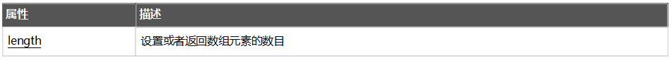
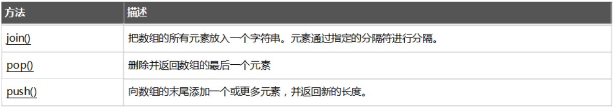
xxxxxxxxxx//pop() 删除并且返回数组的最后一个元素var arr=['a','b','c','d'];alert(arr.length);var temp=arr.pop();alert(temp);alert(arr.length);//push(需要追加的元素) 向数组的末尾追加一个或者多个元素，返回数组的新长度var arr2=['a','b','c','d'];//追加一个元素var len2=arr2.push('e');alert(len2);//追加多个元素var len3=arr2.push('e','f','g');alert(len3);var str = arr2.join("-");alert(str);xxxxxxxxxx1. JS中，数组元素的类型可变的。2. JS中，数组长度可变的。3. JS中数组 索引越界异常,如果操作的索引超过了数组长度,会自动扩展数组
xxxxxxxxxx//1. 最常用,获取当前事件的日期对象var d = new Date(); //2. 使用毫秒值创建日期var d = new Date(milliseconds);//3. 使用时间字符串创建日期var d = new Date(dateString); //4. 使用年月日时分秒创建日期var d = new Date(year, month, day, hours, minutes, seconds, milliseconds);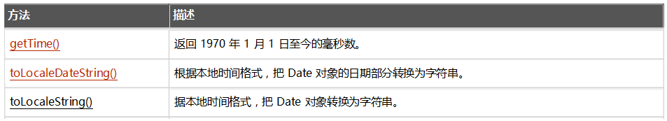
xxxxxxxxxx//创建当前时间的日期对象var date = new Date();//获取本地时间格式的字符串var str = date.toLocaleString();alert(str);//获取当前时间的毫秒值var time = date.getTime();alert(time)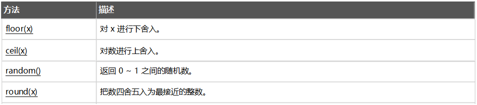
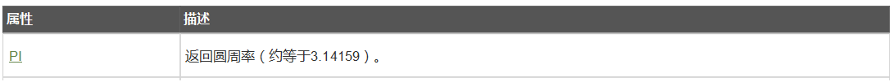
xxxxxxxxxx1. Math对象不用创建，直接使用。 `Math.方法名()`;
xxxxxxxxxxvar num = 12.47;var n1 = Math.floor(num);//向下取整alert(n1);var n2 = Math.ceil(num);//向上取整alert(n2);var n3 = Math.random(); //娶一个0-1的随机数alert(n3);var n4 = Math.round(num); //四舍五入alert(n4);//需求:获取一个1-100的随机数字var random = Math.floor((Math.random()*100)+1);alert(random);//获取圆周率var pi = Math.PI;alert(pi);xxxxxxxxxx//创建正则表达式 3-10位数字字母下划线//方式一:var reg = new RegExp("正则表达式");var regExp = new RegExp("^\\w{3,10}$");//方式二:var reg = /正则表达式/;var regExp2 = /^\w{3,10}$/;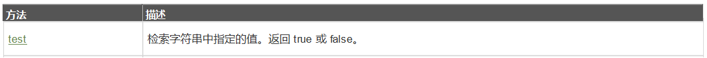
xxxxxxxxxx//判断字符串是否匹配正则表达式var regExp = /^\w{3,10}$/;//定义字符串var str = "zhangsan";//判断字符串是否匹配正则var result = regExp.test(str);if(result){ alert("字符串符合正则表达式...");}else{ alert("字符串不符合正则表达式...");}xxxxxxxxxx封装的方法不需要对象就可以直接调用。
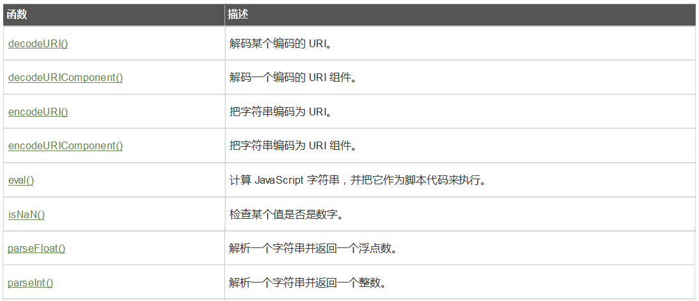
xxxxxxxxxxvar url = "http://localhost:8080/web01?name=传智播客";//对URL进行编码 -- 特殊字符不编码var n1 = encodeURI(url);//对URL进行编码 -- 特殊字符也编码var n2 = encodeURIComponent(url);alert(n1);alert(n2);var url2 = "http://localhost:8080/web01?name=%E4%BC%A0%E6%99%BA%E6%92%AD%E5%AE%A2";var url3 = "http%3A%2F%2Flocalhost%3A8080%2Fweb01%3Fname%3D%E4%BC%A0%E6%99%BA%E6%92%AD%E5%AE%A2";//对URL进行解码操作var n3 = decodeURI(url2);//对URL进行解码操作var n4 = decodeURIComponent(url3);alert(n3);alert(n4);// 将字符串转化为number类型var str = "100.10";var num = parseInt(str); //转化为整形var num2 = parseFloat(str); //转化为浮点型alert(num+" "+ typeof(num));alert(num2+" "+ typeof(num2));var code = "var i = 10 ;alert(i)" ;// 将字符串当做JS代码执行eval(code);1. 以下代码片段执行后，页面显示的结果为？
xxxxxxxxxxvar arr = [1, 2, 3, 4];var temp = '';for (var i = 0; i <= 4; i++) {console.log(arr[i]);temp = temp + arr[i];}document.write('temp的值为：' + temp);
A：temp的值为：NaN
B：temp的值为：1234undefined
C：temp的值为：6
D：该代码片段存在数组下标越界问题，程序会报错
2. 以下代码片段执行后，页面显示的结果为？
xxxxxxxxxxvar i = 10;for (var i = 0; i < 5; i++) {i=7;}document.write('i的值为：' + i);
A：i的值为：10
B：i的值为：7
C：i的值为：5
D：i的值为：8
3.下列程序的运行结果是
xxxxxxxxxxconsole.log(typeof null);console.log(null instanceof Object);
A：true false
B：null true
C：object false
D：null true
4. 以下代码的执行结果?
xxxxxxxxxxvar val = 'smtg';console.log('Value is ' + (val === 'smtg') ? 'Something' : 'Nothing');
A：Value is true
B：Value is Something
C：Something
D：Value is Nothing
5. 以下代码的执行结果？
xxxxxxxxxxvar a = [1, 2, 3],b = [1, 2, 3],c = [1, 2, 4]console.log(a == b);console.log(a === b);console.log(a > c);console.log(a < c);
A：true,false,false,true
B：false, false, false, true
C：true,true,false,false
D：true,true,false,true
6. 以下程序片段输出结果正确的是?
xxxxxxxxxxvar str="12px";var s=str.indexOf("2");alert(s);
A：输出1
B：输出2
C：输出p
D：输出12
7. 使用JS实现下列功能
xxxxxxxxxx1.珠穆朗玛峰高度为8848米，有一张足够大的纸，厚度为0.0001米。2.请问，折叠多少次，可以折成珠穆朗玛峰的高度。
8. 使用JS,实现下列功能
xxxxxxxxxx1. 提供一个输入框,用户输入用户名,判断用户输入的数据是否符合规则 6-18位字符或数字组成* 符合规则,提示用户名可用* 不符合规则,体用户名不可用